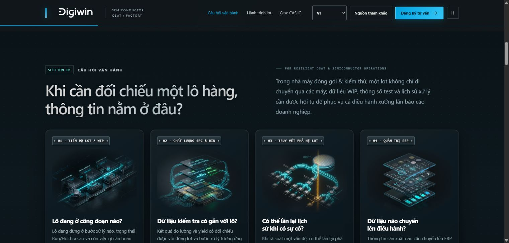
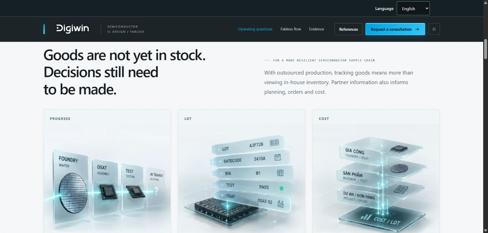
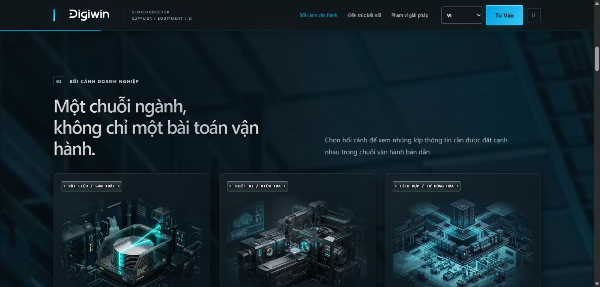

本土企業 · 準備管理能力
越文內容將 ERP、文件、流程與數據，連結到因應半導體供應鏈客戶要求的準備，幫助負責人了解需要建立哪些能力。
Google Search · 從需求到決策
LinkedIn 透過具體管理問題，建立對 Digiwin 的品牌聯想。Google Search 則承接另一種情境：讀者已主動尋找解決方法，我會引導他們進入對應主題與語言的落地頁。
包含在整體 1,170 萬越盾上限內。
OSAT、Fabless 與工業供應商。
越文、英文、簡體與繁體；逐組選擇測試。
我的假設是：同時帶有生產情境與管理需求的查詢，比「半導體」這類廣泛詞更能帶來適合閱讀 Digiwin 內容的人。我會先測試少量群組，依實際搜尋字詞選擇值得延續的部分。
越文內容將 ERP、文件、流程與數據，連結到因應半導體供應鏈客戶要求的準備，幫助負責人了解需要建立哪些能力。
英文與中文從批次、在製品、品質或委外協作切入，再說明時間、責任分工與風險控管的價值。語言依實際讀者選擇。
主要與備用公司名單用於 LinkedIn。Search 則依查詢意圖及越南市場選擇投放；搜尋語言協助判斷應提供的內容，企業類型與職務角色會在取得適當資訊後分別確認。
三個現行頁面均有越文、英文、簡體與繁體版本。廣告直接連到對應語言，頁面再串起營運問題、解決機制、參考內容與諮詢。

搜尋需求：批次追溯、測試資料與在製品進度。
讓品質與營運能依同一批次核對資料，再說明 ERP 與 iMES 各自的角色。

搜尋需求：委外在製品、交期、批次與成本協調。
串起 Foundry／OSAT 的資訊，讓計畫、訂單與成本判斷有共同依據。

搜尋需求：工廠 ERP／MES、品質資料與設備資訊串接。
從工廠管理問題切入，依實際需求說明 ERP、MES 與設備資料各層的作用。
截圖為 2026/10/08 現行頁面的營運內容，可在本資料夾內開啟。各語言連結開啟完整線上頁面，需要網路。本次 Supplier 測試聚焦半導體／電子供應鏈的工業供應商。
每種語言為每類問題準備兩個起始關鍵字，另有一個品牌詞。雙引號表示建議採用詞組比對，方括號表示完全比對。品牌搜尋與解決方案需求分開判讀。
先前查量紀錄多數以橫線顯示指標，因此我會維持小範圍測試，再由實際投遞與查詢了解需求。各語言的兩個 Supplier 詞為新增假設，聚焦 PCB 與零組件工廠。
| 意圖群組 | 起始關鍵字 | 研究依據 |
|---|---|---|
| OSAT · 封裝測試 | "MES đóng gói kiểm thử bán dẫn" | 新增假設，待查量 |
| OSAT · 封裝測試 | [truy xuất lot kiểm thử bán dẫn] | 新增假設，待查量 |
| Fabless · 委外生產 | "quản lý WIP gia công ngoài bán dẫn" | 新增假設，待查量 |
| Fabless · 委外生產 | [theo dõi gia công ngoài bán dẫn] | 新增假設，待查量 |
| 工業供應商 · 工廠管理 | "ERP sản xuất PCB" | 新增假設，待查量 |
| 工業供應商 · 工廠管理 | [MES linh kiện bán dẫn] | 新增假設，待查量 |
| 品牌 · 獨立觀察 | [Digiwin Việt Nam bán dẫn] | 新增假設，待查量 |
| 意圖群組 | 起始關鍵字 | 研究依據 |
|---|---|---|
| OSAT · 封裝測試 | "OSAT lot traceability software" | 已有查詢紀錄；未顯示指標 |
| OSAT · 封裝測試 | [semiconductor test data management] | 已有查詢紀錄；未顯示指標 |
| Fabless · 委外生產 | "fabless outsourced WIP tracking" | 已有查詢紀錄；未顯示指標 |
| Fabless · 委外生產 | [semiconductor subcontract production tracking] | 已有查詢紀錄；未顯示指標 |
| 工業供應商 · 工廠管理 | "PCB manufacturing ERP" | 新增假設，待查量 |
| 工業供應商 · 工廠管理 | [semiconductor components MES] | 新增假設，待查量 |
| 品牌 · 獨立觀察 | [Digiwin semiconductor Vietnam] | 已有查詢紀錄；未顯示指標 |
| 意圖群組 | 起始關鍵字 | 研究依據 |
|---|---|---|
| OSAT · 封裝測試 | "半导体封装测试 MES" | 已有查詢紀錄；未顯示指標 |
| OSAT · 封裝測試 | [半导体批次追溯] | 已有查詢紀錄；未顯示指標 |
| Fabless · 委外生產 | "无晶圆厂外包生产在制品管理" | 已有查詢紀錄；未顯示指標 |
| Fabless · 委外生產 | [芯片委外生产追踪] | 已有查詢紀錄；未顯示指標 |
| 工業供應商 · 工廠管理 | "PCB制造ERP" | 新增假設，待查量 |
| 工業供應商 · 工廠管理 | [半导体零部件MES] | 新增假設，待查量 |
| 品牌 · 獨立觀察 | [鼎捷 越南 半导体] | 已有查詢紀錄；未顯示指標 |
| 意圖群組 | 起始關鍵字 | 研究依據 |
|---|---|---|
| OSAT · 封裝測試 | "半導體封裝測試 MES" | 已有查詢紀錄；未顯示指標 |
| OSAT · 封裝測試 | [半導體批次追溯] | 已有查詢紀錄；未顯示指標 |
| Fabless · 委外生產 | "無晶圓廠外包生產在製品管理" | 已有查詢紀錄；未顯示指標 |
| Fabless · 委外生產 | [晶片委外生產追蹤] | 已有查詢紀錄；未顯示指標 |
| 工業供應商 · 工廠管理 | "PCB製造ERP" | 新增假設，待查量 |
| 工業供應商 · 工廠管理 | [半導體零組件MES] | 新增假設，待查量 |
| 品牌 · 獨立觀察 | [鼎捷 越南 半導體] | 已有查詢紀錄；未顯示指標 |
排除詞建議集中於求職、學習與證券。我會先檢查語境，再套用排除；ERP、MES、測試、品質與追溯等業務用語則保留。
下載檔案供投放前選擇與檢視。查看 Keyword Planner 研究截圖。
三個頁面已具備內容區塊瀏覽與閱讀時間追蹤。我會沿用現有系統，以 Google 來源、廣告活動、落地頁、廣告語言及同一期間，對照各組數據。
連結帶入目標語言、UTM，以及可用的 Google 點擊識別碼；區分意圖群組與廣告版本。
GA4 觀察工作階段與互動工作階段；區塊事件記錄看過的內容及注意時間。
在同一群組對照花費、查詢與閱讀情況，再決定延續或改善哪些環節。
目前內容事件為 section_view 與 section_engagement_time，用來觀察閱讀程度；競價使用的轉換目標，則依已核對的商業結果選定。
第一週檢視後，我會依數據與保留預算，選擇啟用 Search 的時機。最高 50 萬越盾，未稅，包含在整體 1,170 萬越盾內。
每個比率都會附上實際觀察量。符合意圖的查詢須連結工廠營運與管理／解決方案需求；求職、學術及證券另行分類。語境不足的查詢保留為「待釐清」。
| 評估問題 | 衡量方式 | 資料來源與用途 |
|---|---|---|
| 查詢是否符合需求？ | 符合意圖的查詢點擊 ÷ 已檢視可見查詢的全部點擊。 | Google Ads · 同時記錄點擊、查詢量與待釐清群組。 |
| 可觀察資料有多少？ | Search terms report 點擊 ÷ 同活動、同期間的 Search 總點擊。 | 涵蓋率用來界定意圖符合率的解讀範圍。 |
| 進站後是否閱讀？ | 工作階段、互動工作階段、互動率，以及瀏覽的區塊和閱讀時間。 | GA4 · 來源、活動、落地頁、廣告語言與期間一致。 |
| 成本是否合理？ | 後台花費、CPC；同群組數據已核對且有互動工作階段時，以同組花費 ÷ 互動工作階段數，計算每次互動工作階段成本。 | 與查詢品質及閱讀程度一起判讀，清楚註明資料缺漏。 |
| 核心需求的曝光機會？ | 核心關鍵字群的曝光與曝光比重，以可取得的資料為準。 | 依所選關鍵字範圍，結合投遞情況與預算判讀。 |
Search terms report 顯示部分查詢，因此意圖符合率會同時附上涵蓋率。查詢與 GA4 數據按相同群組及期間對照；個別使用者行為則依可觀察的資料範圍判讀。
| 觀察訊號 | 我的調整 |
|---|---|
| 查詢偏離需求 | 收斂關鍵字、比對方式與排除詞。 |
| 查詢適合，閱讀偏弱 | 檢查廣告承諾、語言與落地頁內容銜接。 |
| 來源或數據有落差 | 先核對衡量資料，再評估內容。 |
| 查詢與閱讀訊號適合，成本可接受 | 在上限內延續，或選下一組測試。 |
| 投遞低或樣本少 | 延長觀察、縮小範圍或保留預算。 |
經確認的潛在客戶是補充的商業訊號。數據少時，我會一併報告觀察量、涵蓋率與需持續追蹤的部分，再決定延續、調整或保留預算。